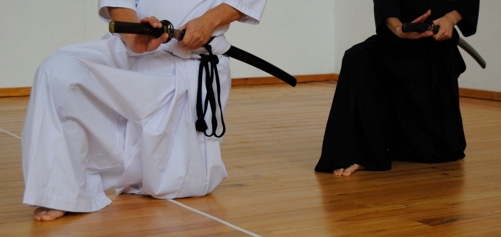

(Zen Nihon Kendo Renmei ou ZNKR) Iaido
Iaido é a arte que une numa ação integrada, fluida e eficiente, o desembainhar e o cortar com o sabre japonês (Nihonto ou Katana).

Junto com o Kenjutsu, o Iaijutsu constituía o cerne do leque tradicional das artes marciais cultivadas pelos samurais, a classe nobre guerreira japonesa que dominou esse país durante mais de oito séculos.
O estudo e a prática de Iai é pois centenária, e consiste em ações de desembainhar, efetuar um ou vários cortes, sacudir simbolicamente o “sangre da lâmina” e voltar a embainhar o sabre.
As técnicas mais divulgadas de Iai são as adotadas pela Zen Nihon Kendo Renmei ou ZNKR (Federação Japonesa de Kendo) com base num currículo de doze formas ou Katas, que foi desenvolvido na segunda metade do Século XX a partir das formas originais de diversas escolas tradicionais (Koryu).
Este conjunto específico de doze formas constitui assim a base essencial para a introdução ao estudo do sabre japonês, e serve de base para as competições desportivas e as graduações oficiais reconhecidas pelo ZNKR e EKF.
A ação decorre a partir de situações predefinidas contra um ou vários adversários imaginários, podendo estes assumirem diversas posições, distâncias ou graus de ameaça.

O Iaidoka, i.e. o praticante de Iai, aprende assim a desenvolver a sua concentração com base numa mente calma e lúcida, em busca de grande eficiência técnica, capacidade de decisão, correta noção temporal e espacial, bem como um sentido de rigor, dignidade e solenidade em todos os seus gestos e atos.
Contudo, mais do que meras técnicas de combate, através de Iaido, o Iaidoka desenvolve a capacidade de ajuizar e enfrentar adversidades de vária ordem com base na disciplina pessoal, serenidade, auto-controlo e lucidez.
Com efeito, o estudo de Iaido incide principalmente sobre os fenómenos da própria mente, visando em última instância, harmonizá-lo consigo mesmo, bem como as situações e os desafios associados aos cenários situacionais estudados.
A prática de Iaido é individual, estilizada e segura, e é aberta a todas as idades (a partir dos 18 anos) e condições físicas.